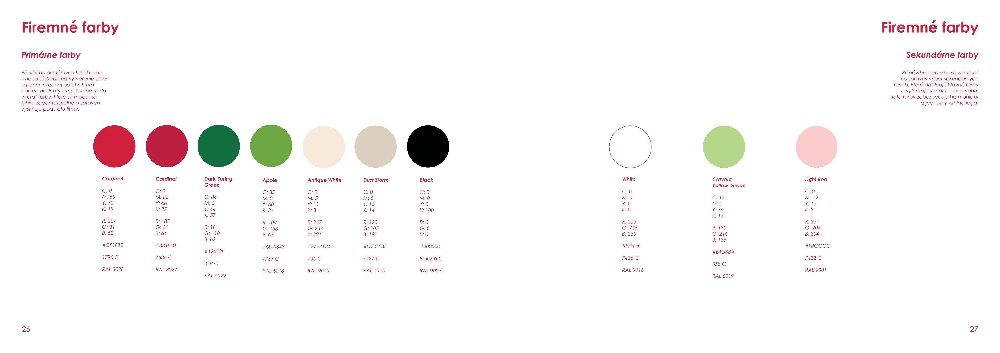
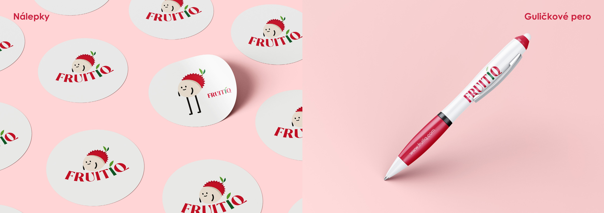

BRANDING, PACKAGING
FRUITIQ
DOWNLOAD MANUAL (PDF) ↓Delivery of exotic fruits from all over the world. A identity system built around vibrant organic forms and clean typography.

01 / CONCEPT
Visual Identity & Grid
Definition of the primary brand mark and structural layout system created to bring consistency across print and digital media.

02 / PALETTE
Exotic Color Palette
Vibrant tones directly inspired by rare tropical fruits, balanced with clean neutral backgrounds for editorial feel.

03 / MERCHANDISE
Branded Apparel & Accessories
Custom tote bags, eco-friendly apparel, and promotional merchandise featuring the vibrant FruitIQ branding elements.
COMPLETE DESIGN MANUAL
Explore all 60 pages of brand guidelines directly below.